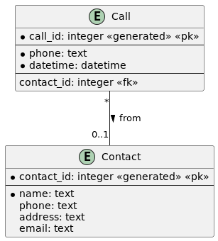
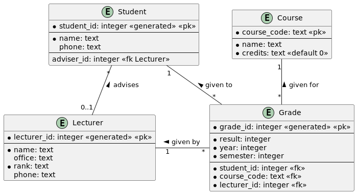
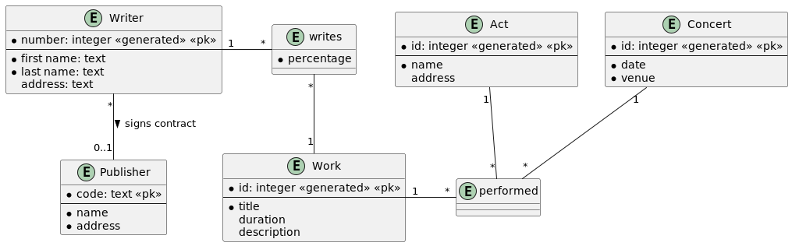
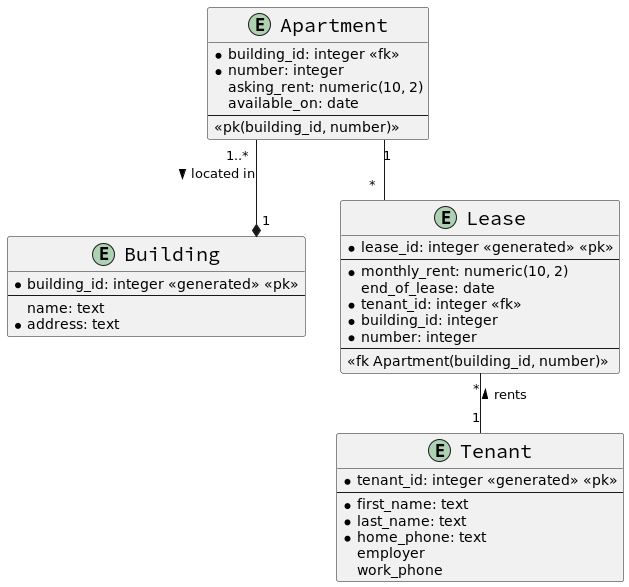

Conversion d'un diagramme EA en schéma relationnel
Schéma relationnel
- Schéma relationnel (modèle de données relationnel) : ensemble de schémas de tables
-
Schéma de table :
- forme basique : nom de la table et ensemble de noms de colonnes
employee(emp_id, name, address, dept_id)
- forme basique : nom de la table et ensemble de noms de colonnes
-
Schéma de table :
- forme détaillée : nom de la table et ensemble de noms de colonnes plus
types de données et clés primaires, et parfois d'autres contraintes telles
que
NOT NULL- les colonnes faisant partie de la clé primaire sont soit soulignées,
soit en majuscules
- pour éviter des problèmes avec certains SGBD, écrivez les noms des
tables et des colonnes uniquement en minuscules dans les
instructions
CREATE TABLE
- pour éviter des problèmes avec certains SGBD, écrivez les noms des
tables et des colonnes uniquement en minuscules dans les
instructions
-
les colonnes faisant partie d'une clé étrangère sont suivies d'un *
exemple :employee(EMP_ID integer, name text, address text, dept_id* integer)
- les colonnes faisant partie de la clé primaire sont soit soulignées,
soit en majuscules
- d'autres formes intermédiaires entre les deux précédentes sont également possibles
- forme détaillée : nom de la table et ensemble de noms de colonnes plus
types de données et clés primaires, et parfois d'autres contraintes telles
que
- Diagramme physique : à partir d'un diagramme logique, convertir toutes les relations en clés étrangères et entités supplémentaires (ou tables) si nécessaire
Étapes
-
Chaque entité du diagramme ER sera une table dans le schéma relationnel
- tous les attributs de l'entité deviennent des colonnes dans le schéma de table
- les attributs de clé primaire deviennent des colonnes de clé primaire dans le schéma de table
-
Chaque association plusieurs-à-plusieurs sera une table
- les attributs de l'association sont ajoutés au schéma de table
- ajouter une colonne de clé étrangère (ou des colonnes) pour chaque table impliquée dans l'association
- choisir une clé primaire parmi les colonnes actuelles, ou ajouter de nouvelles colonnes de clé primaire (comme une colonne ID)
Conseil : comptez le nombre d'entités dans le diagramme ER, ajoutez le nombre d'associations plusieurs-à-plusieurs, et ce nombre sera le nombre de tables dans le schéma relationnel
-
Les associations plusieurs-à-un ne deviendront PAS des tables
- à la place, ajoutez une colonne de clé étrangère du côté plusieurs référant la clé primaire du côté un
- si le côté un est en fait exactement un, alors rendez la colonne de clé
étrangère
NOT NULL
-
Les associations un-à-un ne deviendront PAS des tables
- traitez les associations un-à-un de manière similaire aux associations plusieurs-à-un, sauf que vous ne prenez qu'une des clés primaires comme clé étrangère de l'autre côté
- il n'y a pas de règle parfaite sur quel côté choisir, cela dépend du contexte
- si c'est une association exactement-un-à-au-plus-un, alors généralement la clé étrangère sera du côté au-plus-un (pointant vers le côté exactement-un)
Exemples
Contacts

Réponse
contact(CONTACT_ID, name, phone, address, email)
call(CALL_ID, phone, date, time, contact_id*)
Simple Bank

Réponse
customer(ID, name, address, phone)
account(NUMBER, type, balance)
transaction(ID, code, amount, date, time, description, account_number*)
customer_account(id*, number*)
Collège

Réponse
Student(STUDENT_ID, name, phone, advisor_id*)
Lecturer(LECTURER_ID, name, office, rank, phone)
Course(CODE, name, credits)
Grade(GRADE_ID, student_id* NOT NULL,
lecturer_id* NOT NULL,
course_code* NOT NULL,
semester,
year,
result)
Music

Réponse
writer(WRITER_ID, first_name, last_name, address, pub_id*)
work(WORK_ID, title, duration, description)
publisher(PUB_ID, code, name, address)
act(ACT_ID, name, address)
concert(CONCERT_ID, date, venue)
writer_work(WRITER_ID*, WORK_ID*, percentage)
performance(PERFORMANCE_ID, act_id*, concert_id*, work_id*)
Appartments

Réponse
building(BUILDING_ID, name, address, managed)
apartment(BUILDING_ID*, NUMBER, date_available, asking_rent, managed)
tenant(TENANT_ID, first_name, last_name, employer, work_phone)
lease(LEASE_ID, building_id*, apartment_number*, rent, end_of_lease)
tenant_lease(tenant_id*, lease_id*)